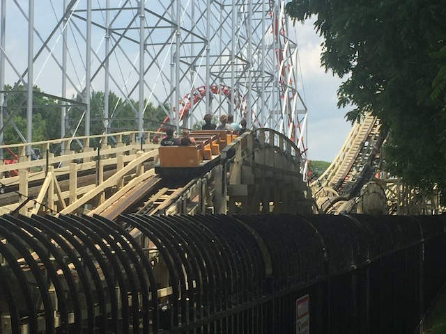
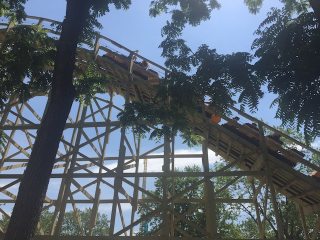
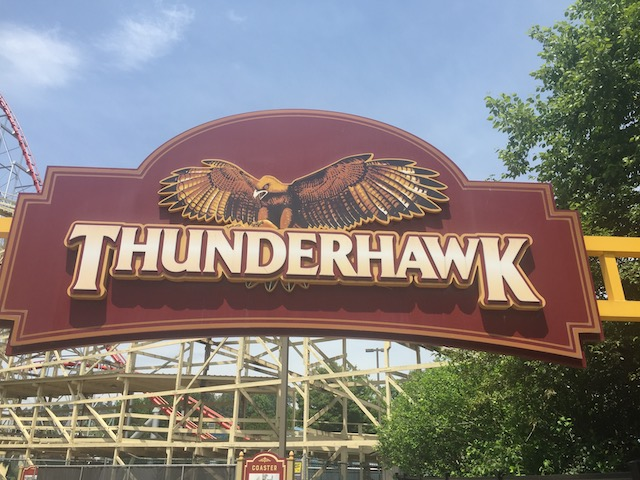
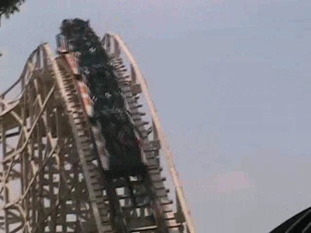
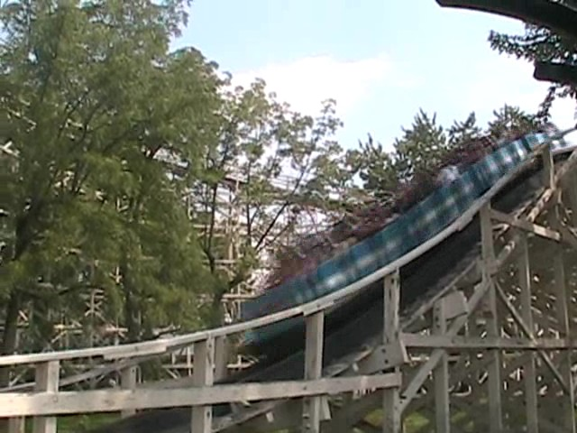
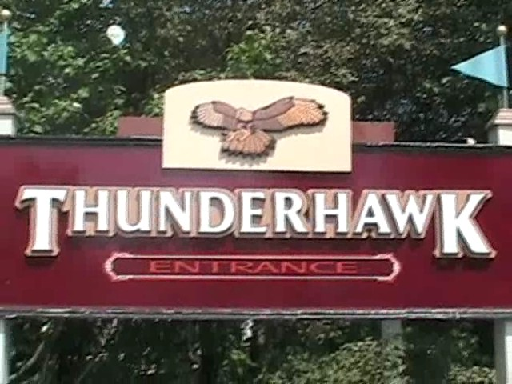

| |
Thunderhawk Review

We're here at Dorney Park and todays ride we'll be reviewing is Thunderhawk. Once you get in the cars and pull down the lap bars and buckle the seatbelt, you're on your way. You roll around a couple of turns before making it to the lifthill. While climbing up the lifthill, you don't really notice much since it's over so fast, but you do get a really good view of Steel Force while on the lifthill. Anyways, you go down the first drop. It's not a bad first drop, but it just...sort of...Ok, it is a bad first drop. You don't really get a dropping feeling. You just *poof* are on the ground. And not in a fun way. I mean the drop is so boring you don't notice it. Ok, well at least we're at a decent speed right now. So there's something good about this ride. We then go through a really tiny and not steep hill. While it's technically a hill, it feels like straight track since it's so small that you never feel like you're changing in elevation at all, it's so not steep that you don't notice any degree change, and there is no change in speed at all whatsoever. However, after that, we do rise up an actual hill. However, there's no force. We just lose a huge chunk of our speed. We then slowly start to gain our speed back as we head down a spiral helix style drop. However, it's not that fun. And to make things worse, we are jackhammering like crazy. *Ugh* Not fun. =( After that, we see a small hill up ahead. Our hopes go up. Perhaps some good airtime will be here. But to our anger, harsh trims to prevent any airtime. >=( F*CKING LAME!!! At this point, we begin to slowly helix our way back down, gradualy gaining some speed. We do head down a small drop that while it seems should provide airtime, does not due to the ass-raping trims from before. After that, we rise up a small hill before slowly turning and dropping down into the bunny hop finale. Now this part of the ride is especially sad since you can tell that this used to be an insane part of the ride, with crazy ejector air. But now it is nothing more than a hollow empty shell of track for the train to shuffle and jackhammer through. =( And yeah. Then it hits the brake run. This is not a ride I am looking foreword to riding again. Not only is the ride boring, rough, and bland, but it's just plain depressing to ride because you can tell that at one point back when it opened in the 1920s, this was Top 10 Worthy (And I mean that by today's standards as well as 1920s standards). If they retracked it and untrimmed it, it could be amazing. But it's currently just a rough boring and depressing peice of sh*t. Ride once for the credit. After that, stay away from this and head to one of the better Dorney Park coasters.
5/10
Location: Dorney Park
Opened: 1923
Built by: Philadelphia Toboggan Coasters
Last Ridden: June 19, 2021
Thunderhawk Photos





Home
|